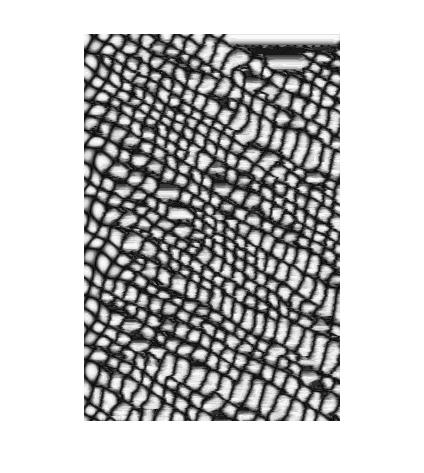
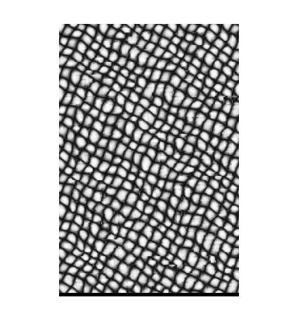

The primary goal of this assignment is to implement a classical texture synthesis and transfer method,
named Image Quilting for Texture Synthesis and Transfer (SIGGRAPH 2001) by Alexei A. Efros and
William T. Freeman. Texture synthesis is the process of creating an image of arbitrary size from a small
sample (grass sample below). Texture Transfer means re-rendering an image in the style of another one.
The algorithm of texture synthesis involves extracting blocks from a given sample texture and fitting them together in the final texture result image. It will match well with the already synthesized region near the block. This is determined by compute the distance between existing shared texture region and all patches in the input texture image.
There’s four different region. For each region, we extract that region, calculate the error by using the following formulas:
For example,
errTop = xcorr2(inputImg.^2, ones([szOverlap szPatch]));
err = errTop - 2 * xcorr2(imin, shared) + sum(shared(:).^2);
Then we find the texture with a reasonable small error and randomly pick a block paste to the output image. Since I didn’t implement the minimum error boundary and merge the new texture patch to the existing image. There’s will be some obvious boundary.
Texture Transfer
We can modify the texture synthesis algorithm by consider the corresponding error of the target image. The total error terms will become:
error = (overlap_error + previous_synthezised_error) + α * correspondence_error
However, during the implementation, I cannot calculate the correspondence error correctly. Although I use the similar formula of calculating overlap regions, the size of my correspondence error matrix is different with the overlap_error matrix.
Extra Credit
Run experiments with varying values for those parameters
szPatch = 5; szOverlap = 4 | szPatch = 15; szOverlap = 4 | szPatch = 20; szOverlap = 4 |
 |
If the patch size is smaller, the running is a little bit higher. But the most important that small path size will distort the original texture.
szPatch = 10; szOverlap = 4 | szPatch = 10; szOverlap = 6 | szPatch = 10; szOverlap = 8 |
 |
More overlap region give a smoother result, but the overall image is a little differ from the original one. The running time is also increase with overlap region.
Reference
http://www.mathworks.com/help/signal/ref/xcorr2.html
http://www.cs.cmu.edu/afs/andrew/scs/cs/15-463/f07/proj_final/www/wwedler/
http://vis.berkeley.edu/courses/cs294-69-fa11/wiki/index.php/A1-DaiBui
http://graphics.cs.cmu.edu/people/efros/research/quilting/quilting.pdf